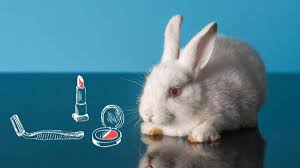

Many products we consume daily, such as certain types of clothing, accessories, or cosmetics, are directly linked to animal cruelty. Items made with leather, feathers, wool, or fur often come from animals raised and slaughtered in inhumane conditions, solely for their commercial use. Furthermore, numerous cosmetics and personal hygiene products are tested on animals before reaching the market, resulting in pain, confinement, and death for thousands of animals. This practice not only causes enormous animal suffering but also negatively impacts biodiversity, as the demand for certain species for industry can drive them to the brink of extinction. The excessive exploitation of animals, both domestic and wild, disrupts the balance of ecosystems, degrades their natural function, and reflects a lack of ethics in our relationship with the environment.
In addition to the direct suffering it causes to animals, the production of animal-based products also has a high environmental cost. For example, the leather industry not only involves the slaughter of millions of animals annually but also uses large amounts of water and highly polluting chemicals such as chromium, which is used in hide tanning. This waste is often dumped into rivers and soil without proper treatment, seriously affecting the health of nearby ecosystems and human communities. Furthermore, the intensive farming of animals for the textile or cosmetics industries consumes natural resources unsustainably and generates large amounts of greenhouse gases, such as methane. Furthermore, the capture of wild animals for feathers, fur, or "exotic" ingredients in cosmetics jeopardizes the survival of vulnerable species, disrupts food chains, and weakens the ecological resilience of the habitats they inhabit.